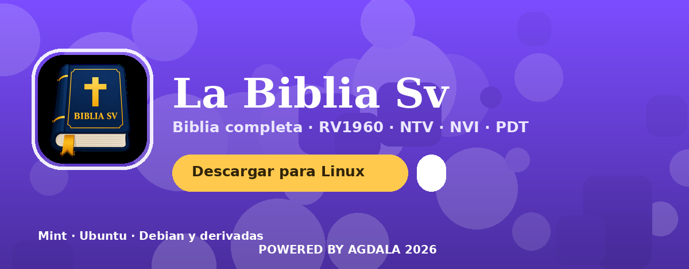
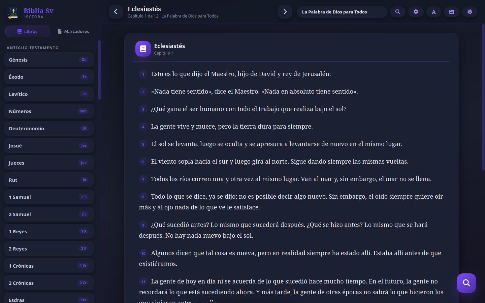
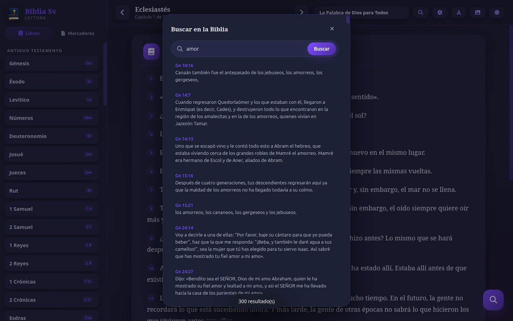
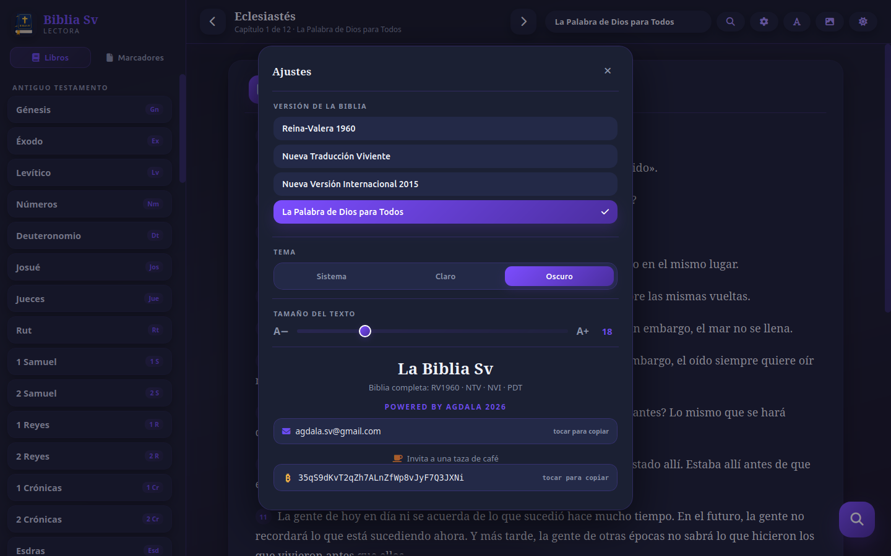
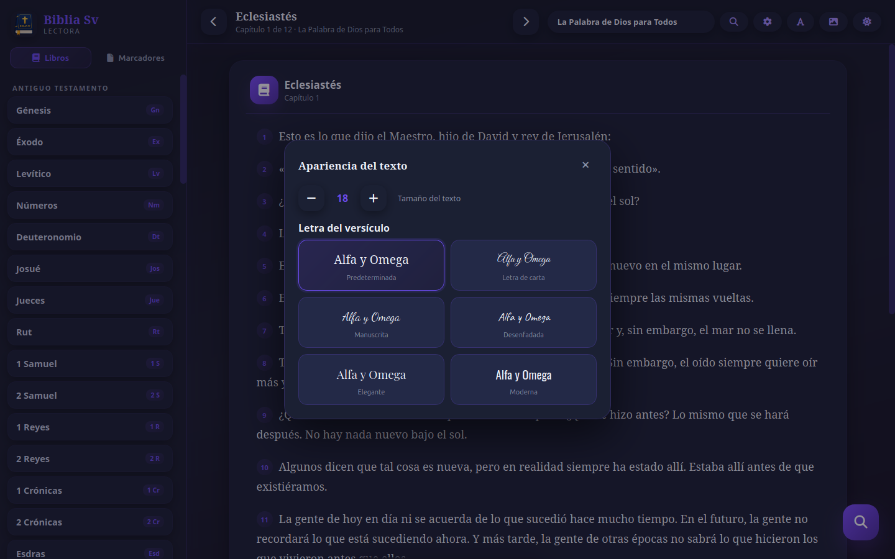
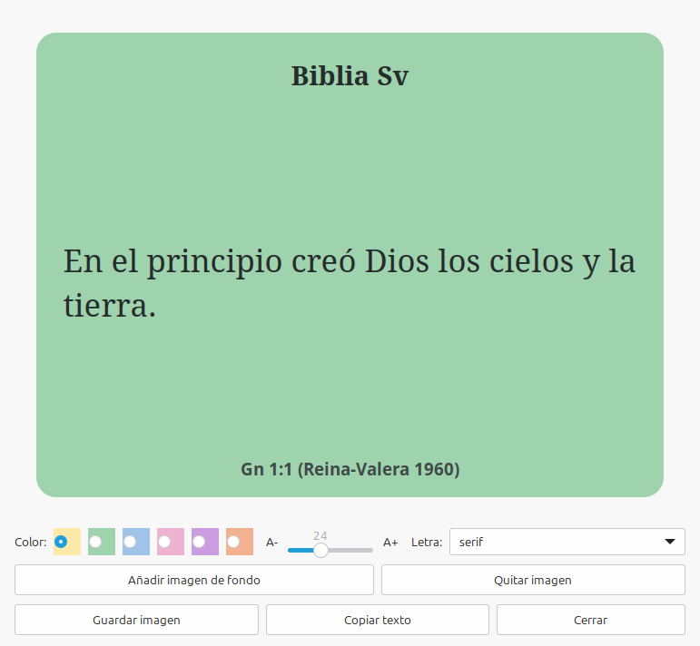

Descarga el paquete e instálalo con el gestor de paquetes. El icono de la app aparece automáticamente en el menú.
# 1. Descarga wget -c https://github.com/masterhdez/LaBibliaSv/releases/latest/download/la-biblia-sv_1.0.0_amd64.deb # 2. Instala sudo apt install ./la-biblia-sv_1.0.0_amd64.deb # Listo — abre "La Biblia Sv" desde el menú la-biblia-sv # Para desinstalar sudo apt remove la-biblia-sv
Dependencias necesarias (se instalan automáticamente): python3, python3-gi, gir1.2-gtk-3.0, gir1.2-pango-1.0, python3-cairo y gir1.2-webkit2-4.1 (o 4.0).
Reina-Valera 1960, NTV, NVI y PDT con conmutación instantánea.
Interfaz estilo Android: sombras, animaciones, ripples, modo oscuro e iconos Font Awesome.
Busca palabras o frases con enlace directo al versículo.
6 colores de resaltado y notas personales por versículo, guardadas en la app.
Guarda y navega tus versículos favoritos.
Crea stickers con imagen de fondo, letra de carta y guárdalos en PNG.
La misma experiencia visual que la app Android, en tu escritorio Linux.






| Paquete | la-biblia-sv · la-biblia-sv_1.0.0_amd64.deb |
|---|---|
| Arquitectura | amd64 (x86_64) |
| Versiones de la Biblia | RV1960 · NTV · NVI · PDT |
| Tipografías | Letra de carta, manuscrita, desenfadada, elegante y moderna (incluidas) |
| Atajos | F11 — pantalla completa · ⛶ — alternar |